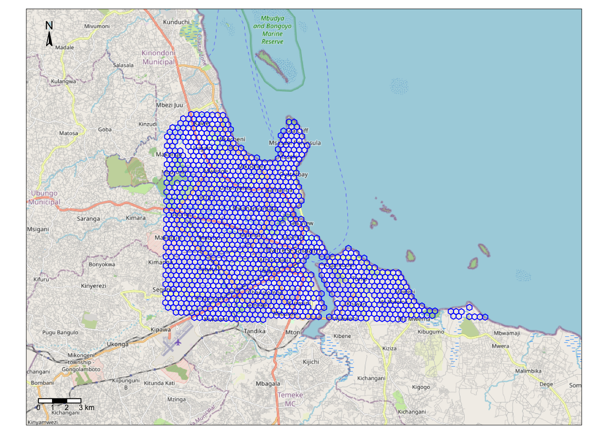
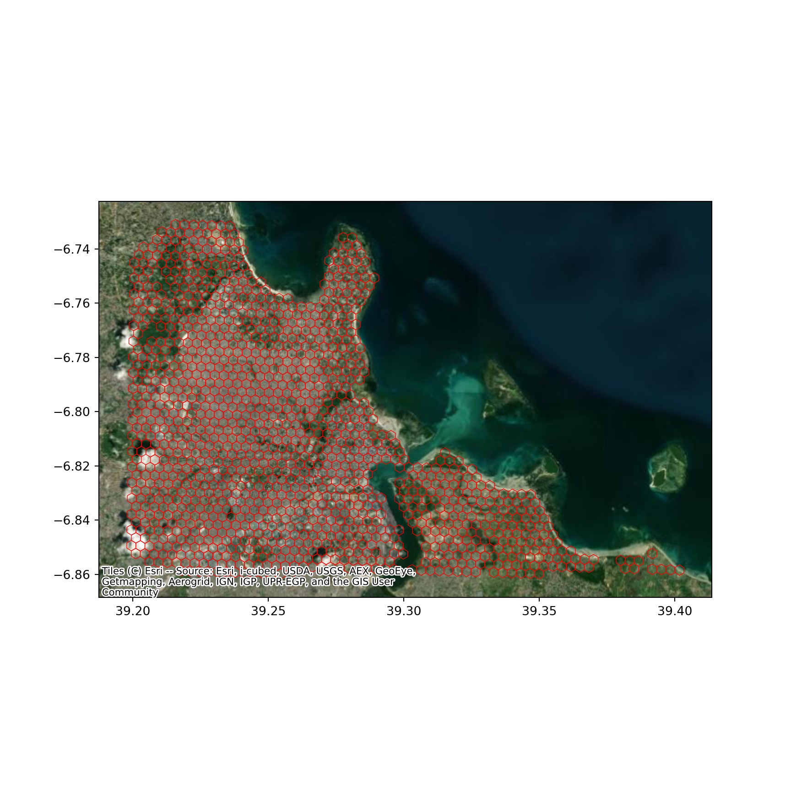

library(sf)
library(tmap)
library(rosm)Do-It-Yourself
import geopandas
import contextily
import matplotlib.pyplot as pltTask I: NYC Geodemographics
We are going to try to get at the (geographic) essence of New York City. For that, we will rely on the same set up Census tracts for New York City we used a few blocks ago. Once you have the nyc object loaded, create a geodemographic classification using the following variables:
european: Total Population Whiteasian: Total Population Asian Americanamerican: Total Population American Indianafrican: Total Population African Americanhispanic: Total Population Hispanicmixed: Total Population Mixed racepacific: Total Population Pacific Islander
For this, make sure you standardise the table by the size of each tract. That is, compute a column with the total population as the sum of all the ethnic groups and divide each of them by that column. This way, the values will range between 0 (no population of a given ethnic group) and 1 (all the population in the tract is of that group).
Once this is ready, get to work with the following tasks:
- Pick a number of clusters (e.g. 10)
- Run K-Means for that number of clusters
- Plot the different clusters on a map
- Analyse the results:
- What do you find?
- What are the main characteristics of each cluster?
- How are clusters distributed geographically?
- Can you identify some groups concentrated on particular areas (e.g. China Town, Little Italy)?
Task II: Regionalisation of Dar Es Salaam
For this task we will travel to Tanzania’s Dar Es Salaam. We are using a dataset assembled to describe the built environment of the city centre. Let’s load up the dataset before anything:
df <- st_read('./data/Kenya_Tanzania/dar_es_salaam.geojson')Reading layer `dar_es_salaam' from data source
`/Users/carmen/Library/CloudStorage/OneDrive-TheUniversityofLiverpool/github/gds/data/Kenya_Tanzania/dar_es_salaam.geojson'
using driver `GeoJSON'
Simple feature collection with 1291 features and 6 fields
Geometry type: POLYGON
Dimension: XY
Bounding box: xmin: 39.19779 ymin: -6.861913 xmax: 39.40337 ymax: -6.729072
Geodetic CRS: WGS 84df = geopandas.read_file(
"./data/Kenya_Tanzania/dar_es_salaam.geojson"
)Geographically, this is what we are looking at:
map <- tm_shape(df) +
tm_borders(col = "blue", lwd = 1) + # add borders
tm_compass(type = "arrow", position = c("left", "top") , size = 1) + # add compass
tm_scale_bar(breaks = c(0,1,2,3), text.size = 0.5, position = c("left", "bottom")) # add scale bar
base_map <- osm.raster(df) #add a basemap
tm_shape(base_map) + tm_rgb() + map
ax = df.plot(
facecolor="none",
edgecolor="red",
linewidth=0.5,
figsize=(9, 9)
)
contextily.add_basemap(
ax,
crs=df.crs,
source=contextily.providers.Esri.WorldImagery
)
plt.show()
We can inspect the data:
head(df)Simple feature collection with 6 features and 6 fields
Geometry type: POLYGON
Dimension: XY
Bounding box: xmin: 39.21411 ymin: -6.736505 xmax: 39.23916 ymax: -6.729072
Geodetic CRS: WGS 84
index id street_length street_linearity
1 897b4c16087ffff 897b4c8ce17ffff 0.011097016 0.9266995
2 897b4c16097ffff 897b4c8ec67ffff 0.009181061 0.9837097
3 897b4c160b3ffff 897b4c8eba3ffff 0.008357370 0.9621583
4 897b4c160b7ffff 897b4c8dd97ffff 0.021292316 0.8845371
5 897b4c16183ffff 897b4c8ce77ffff 0.008776667 0.9599056
6 897b4c16193ffff 897b4c8d83bffff 0.015134582 0.9373706
building_density building_coverage geometry
1 138 15.789853 POLYGON ((39.2375 -6.732641...
2 33 3.722600 POLYGON ((39.23914 -6.73559...
3 82 9.491595 POLYGON ((39.23416 -6.73253...
4 122 7.245560 POLYGON ((39.23082 -6.73243...
5 113 11.806652 POLYGON ((39.21745 -6.73202...
6 320 20.933631 POLYGON ((39.21909 -6.73497...df.info()<class 'geopandas.geodataframe.GeoDataFrame'>
RangeIndex: 1291 entries, 0 to 1290
Data columns (total 7 columns):
# Column Non-Null Count Dtype
--- ------ -------------- -----
0 index 1291 non-null object
1 id 1291 non-null object
2 street_length 1291 non-null float64
3 street_linearity 1291 non-null float64
4 building_density 1291 non-null float64
5 building_coverage 1291 non-null float64
6 geometry 1291 non-null geometry
dtypes: float64(4), geometry(1), object(2)
memory usage: 70.7+ KBTwo main aspects of the built environment are considered: the street network and buildings. To capture those, the following variables are calculated at for the H3 hexagonal grid system, zoom level 8:
- Building density: number of buildings per hexagon
- Building coverage: proportion of the hexagon covered by buildings
- Street length: total length of streets within the hexagon
- Street linearity: a measure of how regular the street network is
With these at hand, your task is the following:
“Develop a regionalisation that partitions Dar Es Salaam based on its built environment”
For that, you can follow these suggestions:
- Create a spatial weights matrix to capture spatial relationships between hexagons
- Set up a regionalisation algorithm with a given number of clusters (e.g. seven)
- Generate a geography that contains only the boundaries of each region and visualise it (ideally with a raster image as basemap for context)
- “Rinse” and repeat with several combinations of variables and number of clusters
- Pick your best. Why have you selected it? What does it show? What are the main groups of areas based on the built environment?
Note
Remember, the instructions above are just guidelines. Feel free to improvise and go beyond to what is set.